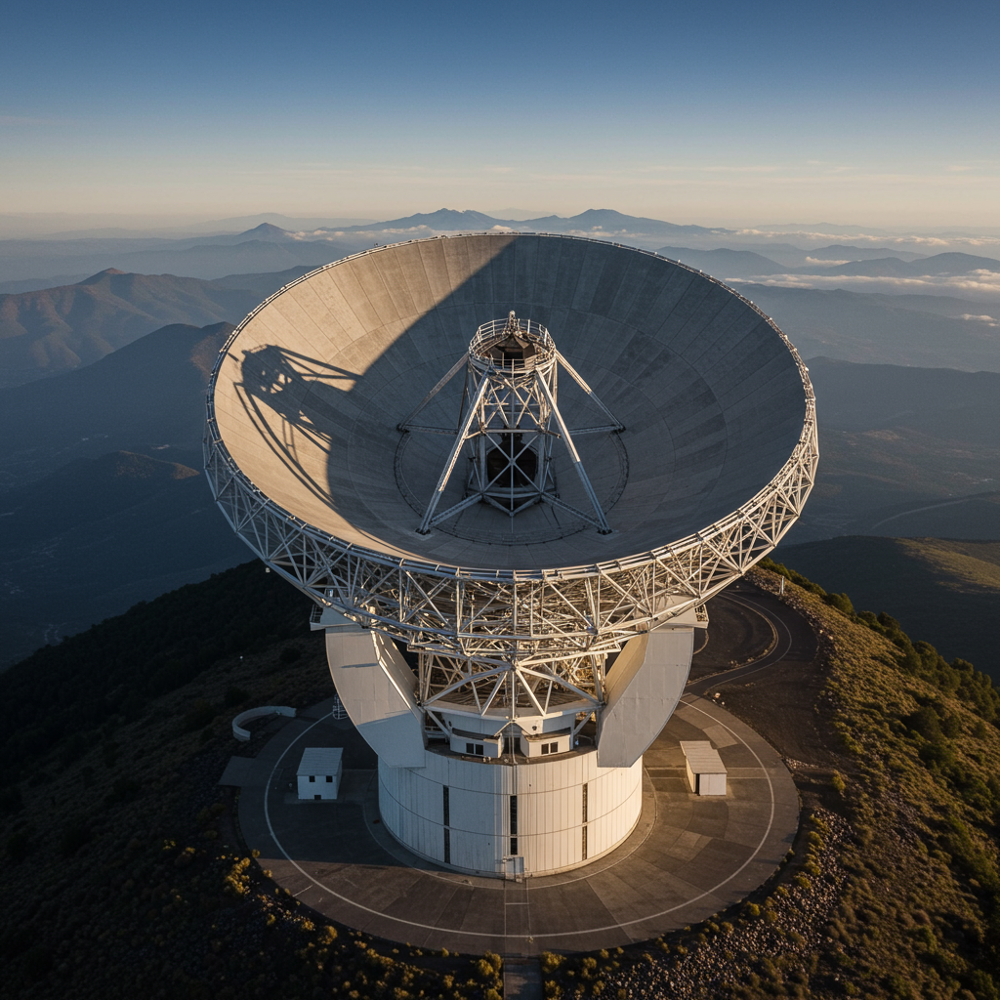

Gran Telescopio Milimétrico Alfonso Serrano
Ubicación: Volcán Sierra Negra, Puebla, México
Inicio de operaciones: 2011 (activo)
Tipo de instalación: Radiotelescopio milimétrico
Objetivo
Observar el universo en longitudes de onda milimétricas para estudiar la formación de galaxias, nubes moleculares, regiones de formación estelar y discos protoplanetarios.
Principales descubrimientos
- Observaciones de polvo y gas interestelar en nuestra galaxia y otras galaxias.
- Participación en la colaboración del Event Horizon Telescope (EHT) para obtener la primera imagen de un agujero negro.
- Estudios sobre el medio interestelar y su composición.
Aportación histórica
Es el telescopio más grande de su tipo en el mundo dedicado a longitudes de onda milimétricas. Ha impulsado la capacidad de México en astronomía de frontera y colaboración internacional. Su participación en el EHT marcó un hito en la ciencia mexicana.
Significado del nombre
Nombrado en honor a Alfonso Serrano Pérez-Grovas, destacado astrónomo mexicano y promotor del proyecto. Su visión permitió consolidar el desarrollo de la radioastronomía en México.
Estado actual
Activo y en continuo desarrollo, con actualizaciones para mejorar su sensibilidad y participación en redes de interferometría global como el Event Horizon Telescope.